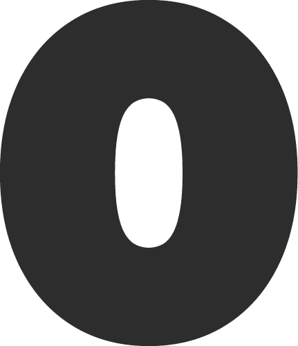
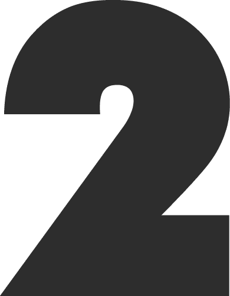
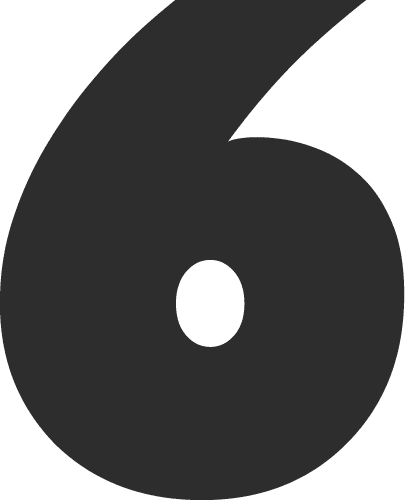

LABORATORIO DE EXPERIMENTACIÓN DE RESIDUOS PLÁSTICOS - ECONOMÍA CIRCULAR - EDUCACIÓN AMBIENTAL - ARTE - :) LABORATORIO DE EXPERIMENTACIÓN DE RESIDUOS PLÁSTICOS - ECONOMÍA CIRCULAR - EDUCACIÓN AMBIENTAL - ARTE - :) -

Adopta un Recicloso
ADOPCIÓN TEMPORAL DE CONTENEDORES RECICLOSOS
El contenedor grande / mediano se recomienda para espacios públicos o privados con afluencia de usuarios.
Objetivo: Acopiar residuos plástico de todo tipo.
Meta: Obtener 50kg de residuos plásticos en 25 / 30 días aprox.
Los contenedores pequeños se recomienda para espacios interior o público continuo a un local o institución.
Objetivo: Acopiar chapitas plásticas.

Segregación + Transformación de residuos plásticos.
CHARLA + TALLER DINÁMICO - INFORMATIVO
Tiempo: 1:30 hrs.
Sensibilizar sobre el uso del plástico en la actualidad y cómo afectan nuestras dinámicas cotidianas. Diferencias entre los tipos de plástico.
Dinámica de limpieza, remoción de etiquetas y triturado del plástico.
Dirigido a instituciones públicas, privadas, educativas, comerciales, coorporativas.
Requerimientos: Tener conexión trifasica y traer plástico tipo 2 HDPE.
Desarrollo de Prototipos con Plásticos Reciclado
DESAROLLO DE PRODUCTO
PRONTO MAS INFORMACIÓN

Metamorfosis Sostenible
DESARROLLAR UN PROTOTIPO PILOTO CON EL PLÁSTICO COLECTADO
Prototipar mobiliario piloto con tableros de aglomerado plástico reciclado tipo 2 (HDPE) y/o tipo 5 (PP), resultado del acopio en el contenedor Recicloso, en codiseñado con la comunidad usuaria de la institución en convenio, que sirva para uso de los mismos. Incluye charlas informativas y dinámicas de diseño. Se recomienda tener salida eléctrica trifásica. Requerimientos: sólo se acopiará plástico de colores (tipo 2 y 5).